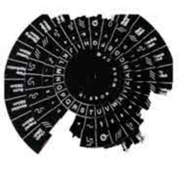

Trade Mark Journal No.2025/048 28 November 2025
UK00004266883 19 September 2025 (9,25,26,40)

- Class 9
- Apparatus and instruments for encrypting and decrypting information; encoding and decoding apparatus and instruments; decoders; hand-operated apparatus for encoding and decoding messages; downloadable computer software; downloadable mobile applications; downloadable computer software for encryption and decryption of data; downloadable computer software for generating and decoding ciphers; downloadable electronic publications in the field of embroidery, textile embellishment and cryptography; downloadable digital embroidery designs; downloadable sewing patterns; downloadable graphic files; downloadable typefaces and fonts; parts, fittings and accessories for all the aforesaid goods.
- Class 25
- Clothing; headwear; footwear; coats; jackets; dresses; shirts; T-shirts; sweatshirts; hoodies; trousers; skirts; knitwear; waistcoats; gloves; scarves; shawls; hosiery; socks; belts; boots; shoes; sandals; slippers; embroidered clothing; face masks [clothing], not for medical or sanitary purposes; parts, fittings and accessories for all the aforesaid goods.
- Class 26
- Lace and embroidery; appliqués [haberdashery]; embroidered patches for clothing; badges for wear, not of precious metal; heat-transfer patches for decorating textile articles; ribbons; braids; trimmings for clothing; tassels; cords for clothing; buttons; hooks and eyes; buckles for clothing; zip fasteners; press-studs; snap fasteners; hat pins; hair ornaments of textile; beads for handicraft work; sequins; spangles; pom-poms; needles; embroidery needles; needle threaders; thimbles; pin cushions; sewing boxes; sewing kits; embroidery kits; parts, fittings and accessories for all the aforesaid goods.
- Class 40
- Embroidery services; custom embroidery for others; monogramming of clothing; appliqué work; embellishment of textiles; textile printing; textile dyeing; laser engraving; tailoring; dressmaking; clothing alteration; custom manufacture of clothing; consultancy, information, advice and assistance relating to all the aforesaid; any of the aforesaid provided via a website, webpage or portal; including (but not limited to) the aforesaid services provided online, and/or provided for use with and/or by way of the Internet, the world wide web and/or via communications, telephone, mobile telephone and/or wireless communication networks.
Charlotte Rosemary Farrant
Representative: Beck Greener LLP